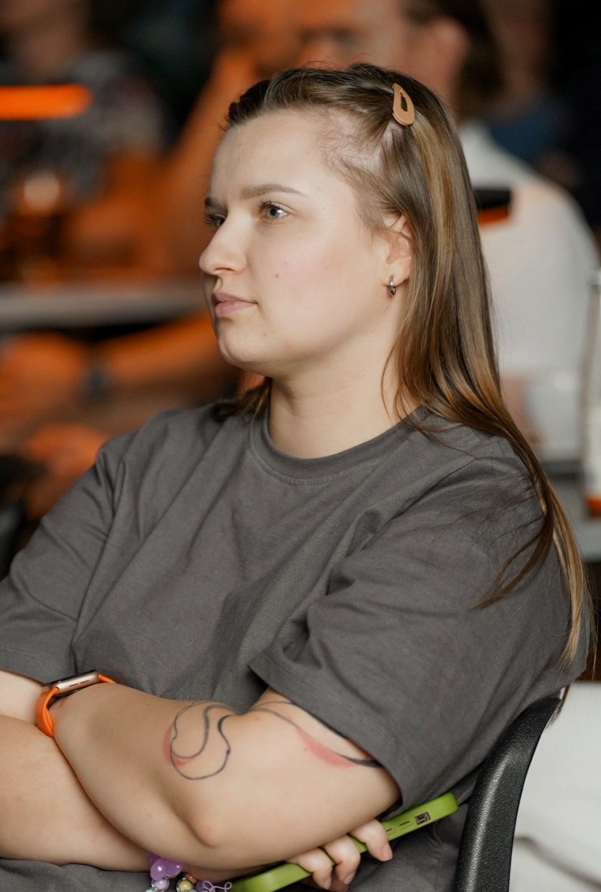

Swedish you start using in everyday life
Swedish courses, materials and mini-lessons for adults who want to do more than just “study a language” – to speak, understand and feel more confident in a Swedish-speaking environment.

Who Fika med Maria is for
For Ukrainian-speaking adults who want to learn Swedish in a modern way – through conversation, culture and a system.
For those starting from scratch
For those who find SFI isn’t enough
For those who want to feel at ease in Swedish
For those who want to progress at work
How I teach Swedish
I don’t build my teaching around dry rules. We take a real topic, add the vocabulary you need, see the grammar in action, speak, listen and gradually put Swedish together into a system.
Speaking from the very first lessons
We don’t just “work through a topic” – we learn to speak, understand, react and use Swedish in real life.
Grammar through examples and context
We don’t memorise rules for the sake of rules. We learn to see language patterns so that Swedish becomes logical and natural.
Vocabulary in ready-made phrases
Words don’t live on their own. So instead of “word – translation”, we learn phrases and ready-made chunks of language that you can use straight away.
Culture as part of the language
Swedish isn’t just words and grammar. It’s also culture, traditions, everyday life and the way Swedes talk to each other.
Materials you’ll want to come back to
My own collections, explanations and texts that help you stay in touch with Swedish even between lessons.
Live lessons with Maria
One-to-one, in pairs or in a group – and also self-study courses if you need a different format.
Ready-made Swedish lessons
Full lessons on topics that people in Sweden really talk about: from lagom and fika to psychology and real spoken phrases. Text, vocabulary, exercises and tasks – everything ready for the lesson.
Media Library
A monthly PDF magazine in Swedish, a podcast for learning the language – and the Slow Swedish Morning Show, which is starting soon. You can download the first issue of the magazine for free.
Topic of the month: Swedish autumn
- Swedish text + translation
- Topic vocabulary
- Grammar focus
- Culture note
- Exercises and a mini-test
Who Maria is
I’m a teacher of Swedish for adults. I combine language, culture, structure and real conversation – and I create materials and courses for Ukrainian-speaking adults who want to learn Swedish in a warm, modern and practical way.
I’m drawn to the idea that language is not an exam or a stack of textbooks, but a way to enter another culture, feel it from the inside and start communicating for real. Over my years of work I’ve realised the most important thing: people start speaking not when they’ve learned all the rules, but when they feel that the language is alive, logical and “theirs”.
Swedish is warmer than it seems: it has a lot of logic, rhythm and words that are intuitively clear. And behind it lies a whole culture – fika, lagom, calm, and respect for people and for time. To learn Swedish is to gradually start thinking a little differently.
“I don’t build my teaching around dry rules. We take a real topic, add vocabulary, see grammar in action – and speak.”Choose a course
Warmth and respect
Adult learning without pressure, grades or the fear of making mistakes.
System
A clear structure instead of chaotic lessons.
Practice
Language you actually start using.
Culture
Not just words – a way of thinking and living.
What students say
Students’ own words – from YouTube comments and private messages.
Ready to start your Swedish story?
Start with a course or a ready-made lesson.